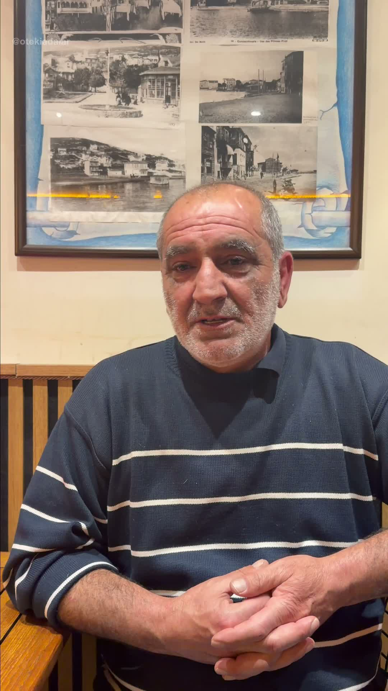

Kınalıada ve Burgazada'da yaşayan ve çalışan sakinler, esnaf, düzenli ziyaretçiler ve her iki adaya gönül bağı olan herkes burada sesleniyor. Adaları seven, adaların hakkını savunan, uzaktan da olsa bu mücadeleye ortak olan tüm sesler bu sayfada bir araya geliyor.

Adayla bağın varsa ve anlatmak istiyorsan bize ulaş — seni dinlemeye geliyoruz.
Bilgilerini bırak, en kısa sürede ulaşalım.
Kampanyaya destek verenler yaşadıklarını anlattı. Her satır bir gerçek.
Akşam bir arkadaşımla buluştum, eve dönmek için Bostancı'ya geçtim. 21:45'i birkaç dakika kaçırmışım. Sonraki sefer 02:00. Kafede oturup beklemenin başka yolu yoktu.
06:30 seferinin kalktığını o sabah işe gidemeyince öğrendim. Patronuma nasıl anlattığımı bilen var mı? "Ada sakini" demek yetmedi artık.
Çocuklarım dershaneden dönerken son seferi kaçırınca ne yapacaklarını bilemiyorlar. Bu bir lojistik sorunu değil, güvenlik sorunu.
Formdan gelen hikayeler moderasyon sonrası bu sayfada ve @otekiadalar'da yayımlanabilir. Dilersen anonim kalabilirsin.